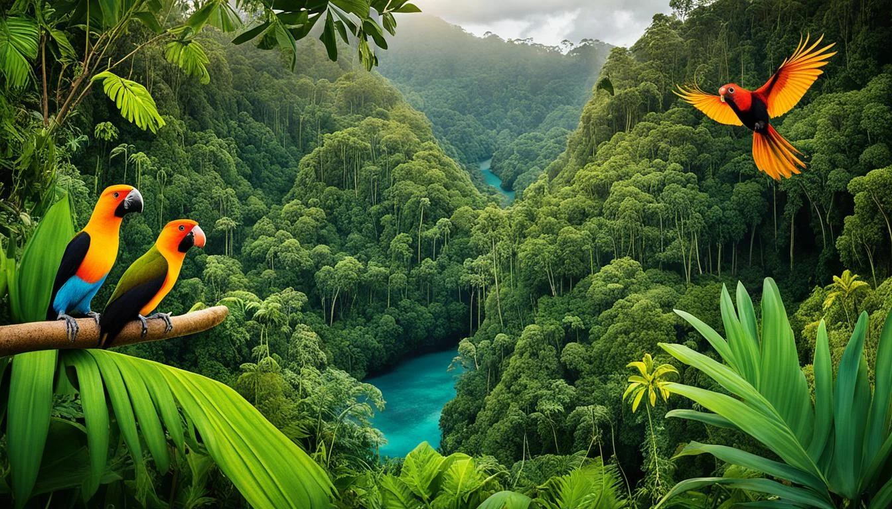

Papua New Guinea is home to over 200,000 flora and fauna that is found no where else in the world. It goes from mangroves, rainforests, and birds to insects and orchids. It is rich in biodiversity and thus needs care and much protection if we are to save and preserve them for the future. Above are links to 3 endemic species that I will be elaborating more on and links to support its preservation.
Apart the three that I've personally chosen to discuss on, there are many more that are local to the biodiversity in Papua New Guinea that needs attention from the government and the locals. Below are a list of them you can learn more about from their websites. They are categorized below:
